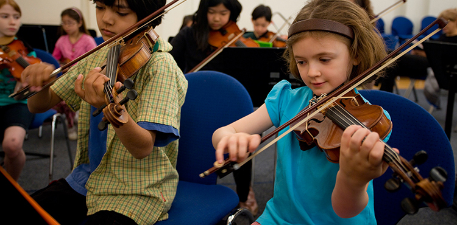

Music is fun!
Music is a fun and engaging activity that can bring members of the community together from all areas of life, to play and sing as one.

Music is for everyone.
Music has a universal appeal. Adults and children alike should have the same opportunities to engage with music, learn a lifelong skill, and develop a passion for performing.

Music builds friendships and character.
Music is often one of the most memorable among school experiences. Members of a school music program forge friendships that last a lifetime, and build character and teamwork skills relevant everywhere.